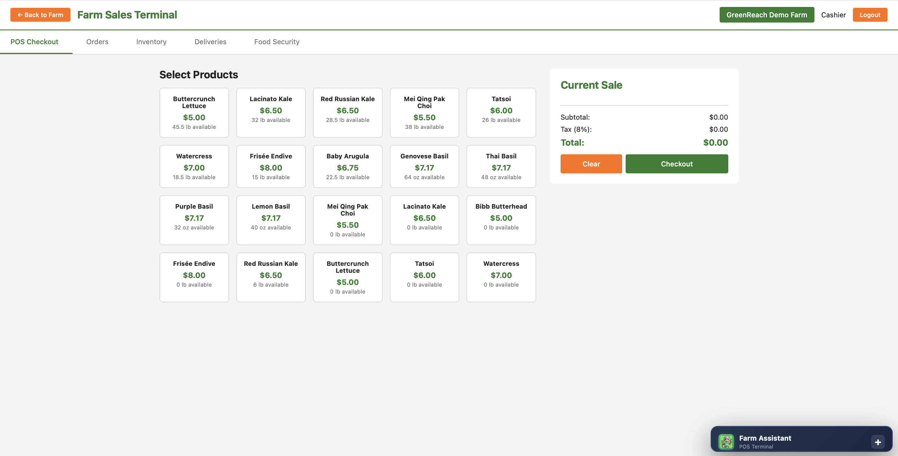
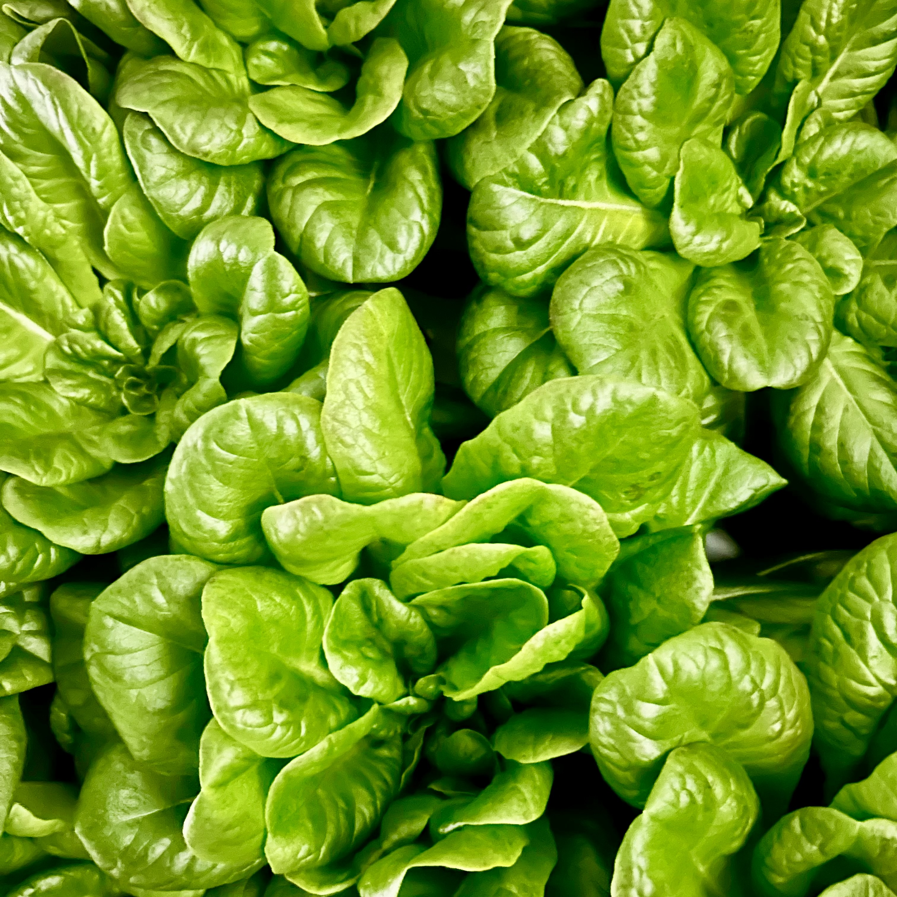
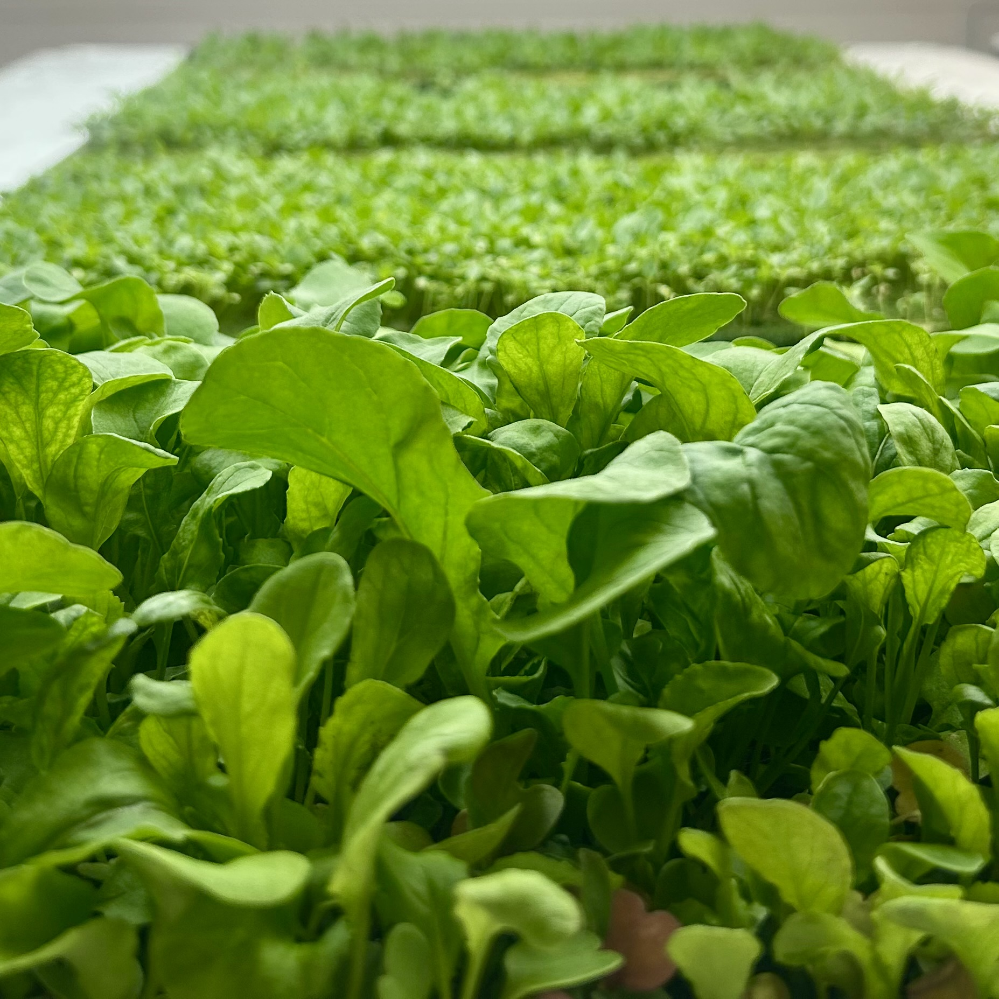
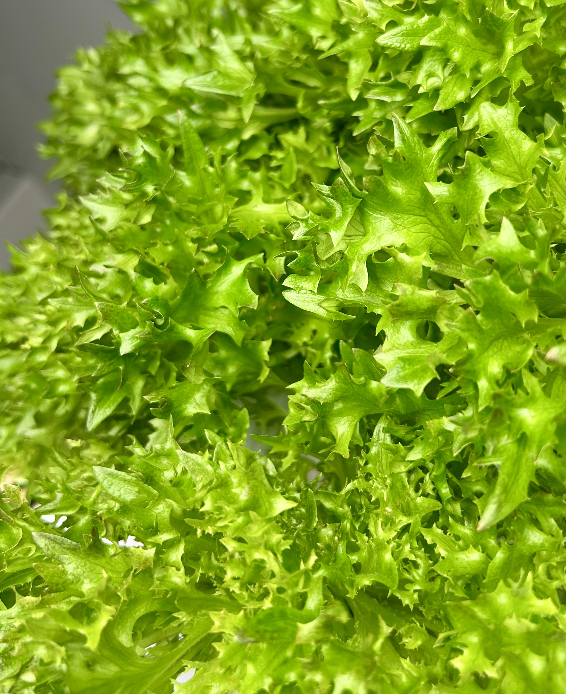
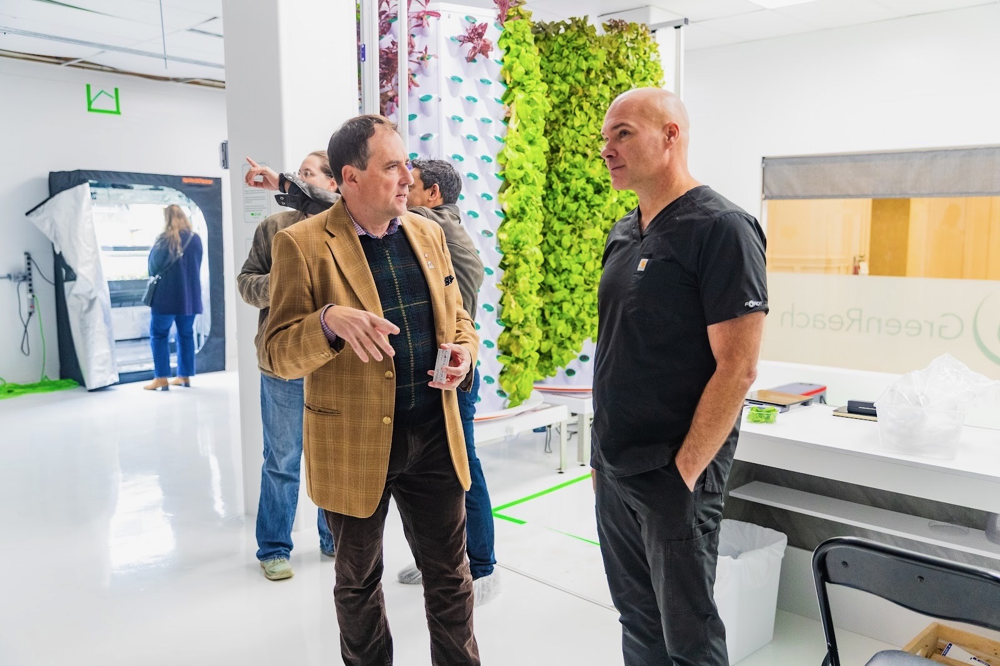
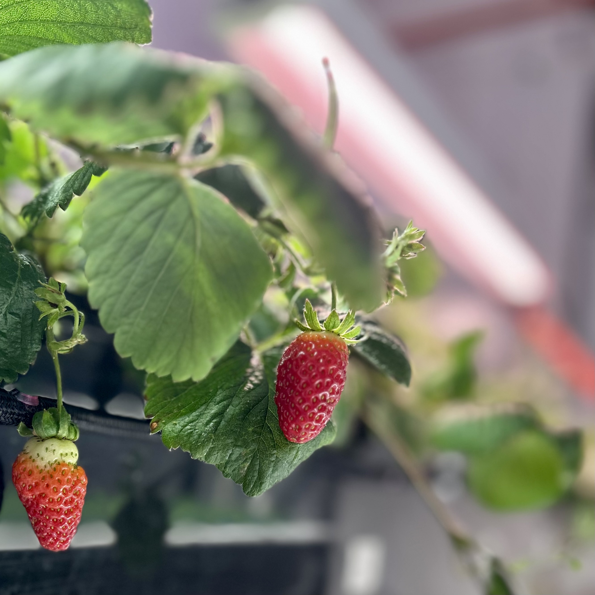

Built-in demand
for every harvest
Wholesale portal & online sales terminal
Connect directly to buyers before you even plant. Better margins, local markets, and complete control over your story—from seed to sale.
Wholesale portal & online sales terminal
Connect directly to buyers before you even plant. Better margins, local markets, and complete control over your story—from seed to sale.
Stop relying on middlemen. The wholesale portal connects you directly to restaurants, grocers, and consumers—giving you better prices and predictable demand.
Consumers want local, fresh, and traceable. The wholesale portal gives you access to produce harvested hours ago—not days or weeks.




Transparency builds trust—and trust drives sales. Farmers showcase their operation and practices. Buyers tell customers where their produce comes from. Everyone wins when the story is authentic.



Traditional distribution takes 50-70% of retail value. Direct sales flip that equation—farmers keep more, buyers get premium quality at fair prices, and customers get what they truly want.
Seamless connection between grow room and market. Inventory updates automatically as crops mature—buyers order with confidence, farmers harvest with certainty.
We give you the tools needed to grow, sell, and buy produce that represents your market, your brand, your story.
We believe, local knows local best.

GreenReach Central is the governing operations unit for wholesale fulfillment and communication. AI supports recommendations, but final control remains with authorized human operators.